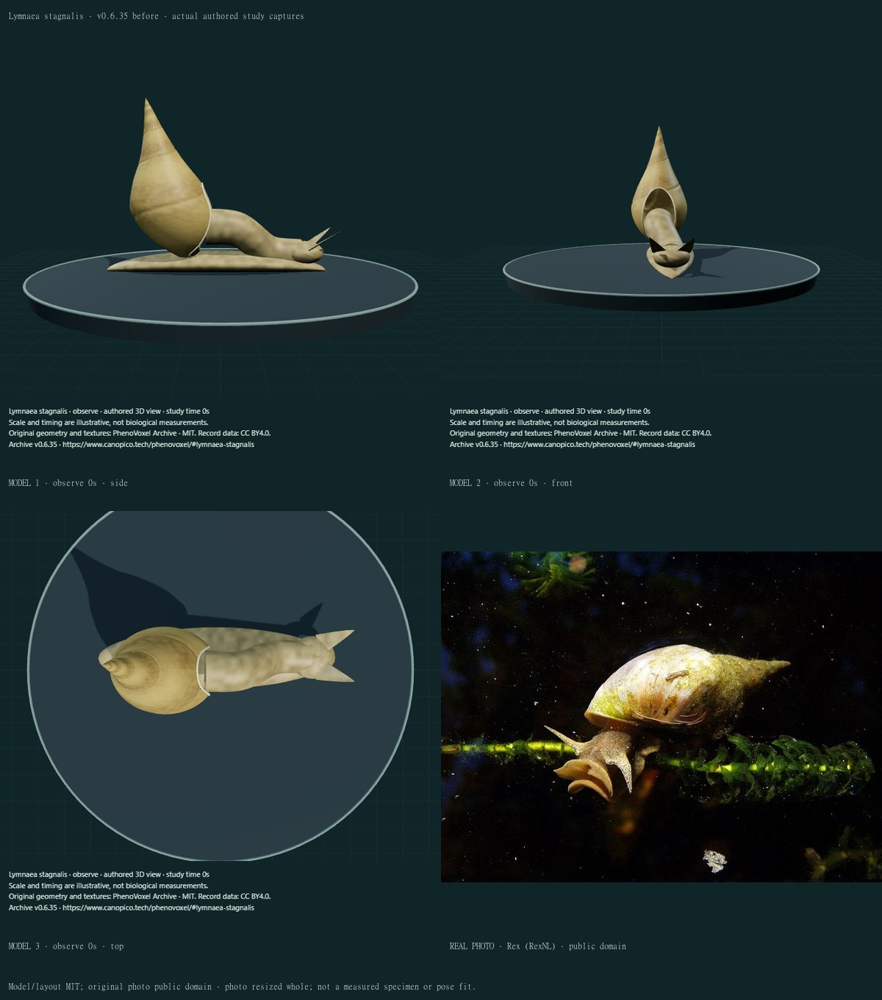
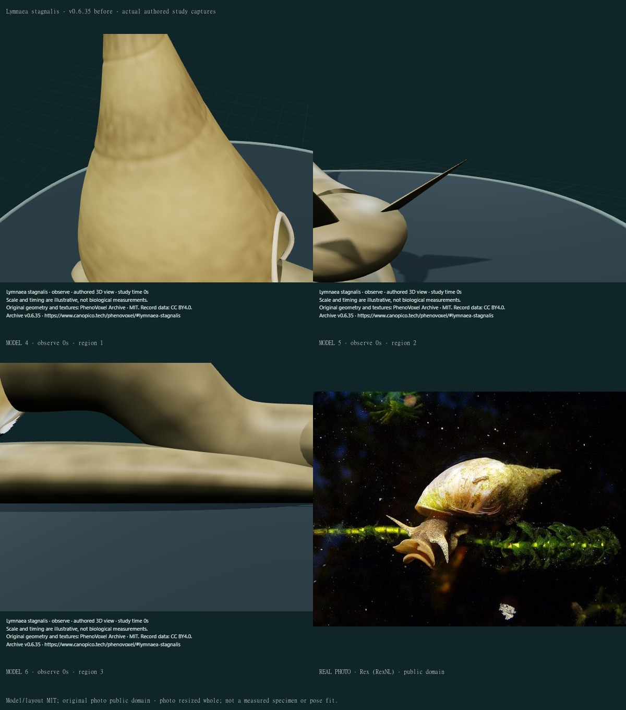
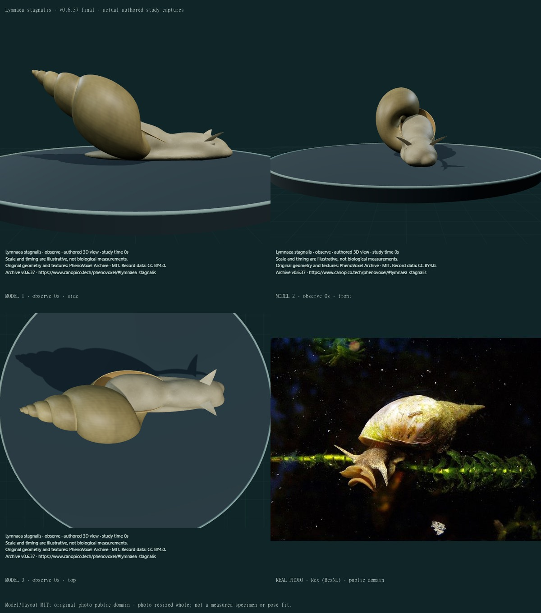
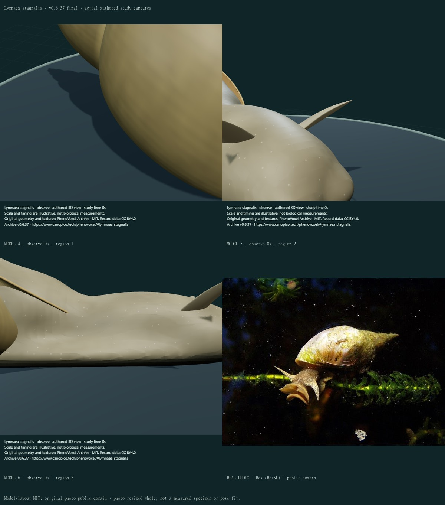
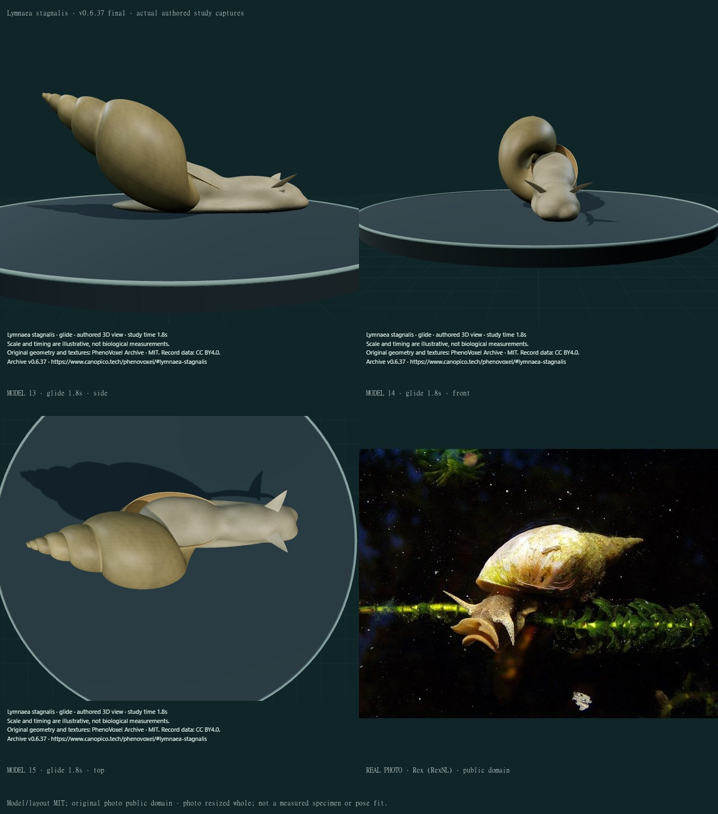
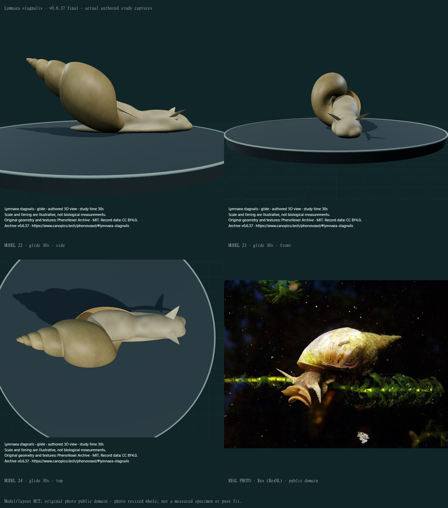

Lymnaea stagnalis · shell, soft body and supported glide
v0.6.37 · 27 individually inspected final compiled states, six actual public baseline views and eleven credited sheets. One existing species corrected; zero additions.
Comparisons use different individuals and poses. They are qualitative checks, not a morphometric, optical or biomechanical fit.
- Rounded swept whorl volumes with an inflated final whorl replace the old revolved shell envelope. Selected carriage is lower and a thin brown aperture edge replaces the conspicuous raised white rim.
- A closed connected external head-foot-mantle/collar removes the long separate neck and primitive head/foot joins. Selected snout lobes remain approximate.
- Two closed, slightly curved flattened triangular tentacles retain small eyes near their bases. They are distinct from four Cornu stalks.
- Fine original growth pigment and attached numerical skin puncta replace coarser repeated bands/aliased skin. No organism-photo or scientific-figure pixels are used as surface artwork.
- The existing partial glide now uses a bounded smooth start/stop and small finite local gesture. Selected sole support is tested directly, with the shell above the support plane; body translation is not relabelled resolved ciliary locomotion.
This remains a partly stylized, unmeasured external adult study. The six selected turns, growth parameters, whorl apposition, columella/internal shell, shell carriage, aperture thickness, soft-body insertion, snout/lips, sensory tissue unions and basal-eye position are not fitted to a specimen. The selected brown pigment, wear and numerical skin puncta do not reproduce all natural variation, epibionts, translucent tissues or calibrated optics. Thin tentacles use an authored fill term for underside readability, not a tissue-scattering measurement. The body is one closed connected external mesh; that is a software geometry property, not anatomical or biological validation. The same body performs only a short finite translation and local tentacle articulation. Cilia, muscular-wave dynamics, mucus/traction, substrate forces, flow, feeding, respiration and physiological retraction remain unfinished. Compatibility/export retains coarse pigment/bump but omits fine main-shader puncta. There is no measured accuracy percentage, independent specialist certification or claim of photorealism.
Before · v0.6.35 · 1

Real reference: Rex (RexNL) · Commons PD-self, public-domain grant. Whole delivered photograph resized. Original model/layout MIT; the original photo remains public domain.
Before · v0.6.35 · 2

Real reference: Rex (RexNL) · Commons PD-self, public-domain grant. Whole delivered photograph resized. Original model/layout MIT; the original photo remains public domain.
Final comparison 1

Real reference: Rex (RexNL) · Commons PD-self, public-domain grant. Whole delivered photograph resized. Original model/layout MIT; the original photo remains public domain.
Final comparison 2

Real reference: Rex (RexNL) · Commons PD-self, public-domain grant. Whole delivered photograph resized. Original model/layout MIT; the original photo remains public domain.
Final comparison 3
Real reference: Rex (RexNL) · Commons PD-self, public-domain grant. Whole delivered photograph resized. Original model/layout MIT; the original photo remains public domain.
Final comparison 4
Real reference: Rex (RexNL) · Commons PD-self, public-domain grant. Whole delivered photograph resized. Original model/layout MIT; the original photo remains public domain.
Final comparison 5

Real reference: Rex (RexNL) · Commons PD-self, public-domain grant. Whole delivered photograph resized. Original model/layout MIT; the original photo remains public domain.
Final comparison 6
Real reference: Rex (RexNL) · Commons PD-self, public-domain grant. Whole delivered photograph resized. Original model/layout MIT; the original photo remains public domain.
Final comparison 7
Real reference: Rex (RexNL) · Commons PD-self, public-domain grant. Whole delivered photograph resized. Original model/layout MIT; the original photo remains public domain.
Final comparison 8

Real reference: Rex (RexNL) · Commons PD-self, public-domain grant. Whole delivered photograph resized. Original model/layout MIT; the original photo remains public domain.
Final comparison 9
Real reference: Rex (RexNL) · Commons PD-self, public-domain grant. Whole delivered photograph resized. Original model/layout MIT; the original photo remains public domain.
Evidence and boundaries
- MolluscIreland · Great pond snail morphology
Actual species account text read: large body whorl, narrower pointed spire, fragile pale-brown shell and fine or absent spiral striae. Descriptive morphology, not fitted dimensions or a native-range polygon.
- Nationalpark Donau-Auen · Great pond snail external form
Actual account text read for inflated later whorls, delicate shell/fine growth lines, flattened triangular tentacles and basal eye position. Its stated whorl count and regional account do not define a fixed universal adult geometry; no physiological mechanism is reconstructed from descriptive prose.
- Vinarski 2014 · Shell variation in two Lymnaea stagnalis morphotypes
Actual publisher Figure 1 at 358x397px and caption inspected in browser, with selected methods/discussion text. C/D are the stagnalis morphotype, A/B the fragilis morphotype, E a measurement scheme. The study examines shell variation and discusses conflicting taxonomic treatment; neither a photographed shell nor a morphotype is counted as a new record or fitted to this model. Direct image downloads returned an HTML denial, not a downloaded figure asset. No paper figure is redistributed.
- Pavlova 2010 · Muscular waves contribute to gliding rate
Actual indexed primary abstract read: smooth supported gliding in Lymnaea stagnalis has ciliary and muscular contributions. No primary full figures, trajectories, ciliary fields, forces or mucus measurements were acquired. The finite translation/gesture is only a partial external illustration; macroscopic Cornu-style pedal waves are not substituted.
The actual publisher shell figure was inspected at its available 358 × 397 pixel resolution. Panels C/D and the measurement scheme were distinguished from A/B. The study discusses competing morphotype interpretations; this correction does not add or split taxon concepts. No figure is redistributed or used as texture pixels.
The first 15-check affected batch passed 14 and failed one raw-byte manifest comparison. A single negative-zero tentacle cap coordinate became positive zero on Observe. Construction now canonicalizes signed zero, preserving the original geometric meaning and exact byte-reproduction gate. Earlier drafts exposed inappropriate upright carriage, an empty upper aperture/body gap, faceted pigment, dark thin-looking tentacles and shell-supported floating foot; selected surface and support corrections were reviewed. The first broad261-check run passed260 and failed an old exact lip-name expectation; the species-specific expectation and explicit basal-eye/base-attachment checks were repaired without dropping support or retained-geometry gates. The repaired affected batch passed11checks and the final complete local run passed261/261. Published frozen CI is checked separately during release verification. Twelve captures retained a636preview document after hash navigation; all were rejected before final inspection, the document reloaded, and a637version gate enforced for the27accepted captures. Draft captures are private and excluded from final counts.
Closed/connected surfaces, open aperture boundary, direct selected sole support, finite action/reset, retained material/geometry and reproducible numeric hashes are software consistency gates. They do not validate living anatomy, contact mechanics, ciliary physiology or natural optics.
Individual findings, exact sources and limitations · Reproducible geometry, pigment and photo checksums · Published software checks
307 records; 243 remain to 550. This does not finish realism of the other Mollusca or the remaining movement/development work.